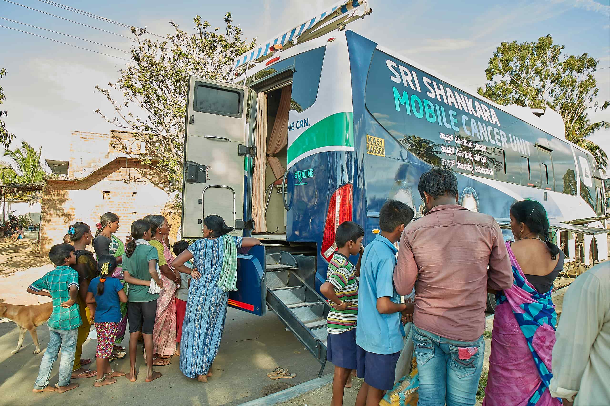

The Community Oncology Department is the public health arm of our hospital, dedicated to reducing the burden of cancer across our region through proactive public awareness, risk assessments, screening, early diagnosis and treatment. Guided
The Community Oncology Department is the public health arm of our hospital, dedicated to reducing the burden of cancer across our region through proactive public awareness, risk assessments, screening, early diagnosis and treatment. Guided by latest global benchmarked strategies, we actively bring essential services, including free cancer screening camps and risk-reduction education, directly to the community. Our mission is to ensure that cancer is detected in its earliest, most curable stages, providing timely, equitable access to high-quality care for all populations.
Community Oncology operates on the established principle that 30–50% of all cancers are preventable by reducing exposure to cancer risk factors, and also ensure that people are provided with the information and support they need to adopt healthy lifestyles and vaccination, and survival rates improve dramatically with early diagnosis. Our role is to bridge the gap between advanced tertiary care and the community, addressing the financial, logistical, and awareness barriers that often lead to late-stage cancer diagnosis.
We focus on reducing cancer incidence by educating the public on key modifiable risk factors (tobacco use, alcohol, unhealthy diet, infection). We offer targeted programs, especially those focusing on tobacco cessation and HPV vaccination awareness.
We run dedicated hospital-based clinics and community outreach programs to screen apparently healthy, asymptomatic individuals for cancers where early detection is proven to save lives (Oral, Breast, Cervical).
A critical function is ensuring that any suspicious or confirmed pre-cancerous or cancerous case identified in the community is immediately referred to our specialized treatment center, preventing diagnostic delays and ensuring timely treatment commencement.
Our department delivers a range of direct-to-community services and clinical programs designed to empower individuals to take charge of their health.
Organizing regular, evidence-based screening camps in rural and underserved areas, often utilizing mobile screening units (e.g., mobile mammography, mobile laser treatment unit bus). Focuses on screening the three common, curable cancers: Oral, Breast (Clinical Breast Exam, Mammography), and Cervical (Pap smear/Colposcopy).
Bringing Care to You: We organize free screening camps in your local community, often using a special mobile van. This makes essential tests for oral breast and cervical cancer easy to access, regardless of where you live.
Provides dedicated counselling and pharmacological assistance for tobacco cessation, a critical step in reducing the risk of Oral, Lung, and other cancers. We also diagnose and manage pre-cancerous lesions (e.g., leukoplakia, cervical dysplasia) to prevent progression to invasive cancer.
Helping You Quit: We run specialized clinics to help you quit tobacco use, which is a major cause of cancer. We also identify and treat pre-cancerous lesions in the mouth or cervix, preventing it from growing into full-blown cancer.
In hospital-based settings, we offer risk assessment for individuals with a strong family history of cancer or known genetic risk factors (e.g., BRCA, Lynch Syndrome).
Understanding Your Risk: If cancer runs in your family, we provide expert counseling to assess your risk and discuss strategies, including lifestyle changes or preventive measures, based on your genetic profile.
Maintaining and analyzing high-quality data on cancer incidence, burden, and survival trends.
Tracking the Disease: This tracking helps our hospital understand where cancer is most common and which prevention strategies are most needed in our region.

Our outreach clinic in Chinthamani serves as a key centre for cancer care in the locality, acting as the first point of contact for diagnosed or suspected cases. We coordinate community screening programs and facilitate timely referrals to our hospital, SSCHRC for specialised care.

The cancer detection camp bus is equipped with state-of-the-art diagnostic equipment supported by Cognizant Foundation.
The unit includes a digital mammography machine for high-resolution breast imaging, all the images are securely relayed to the hospital for reporting by a specialist Breast Radiologist. The bus also features examination couches to facilitate clinical breast and cervical examinations, along with a television display system used for playing awareness and educational videos for women visiting the camp. Together, these features enable comprehensive screening, on-site evaluation, and real-time specialist reporting to ensure timely diagnosis and follow-up care.

The custom-built Mobile Cancer Detection and Screening Bus is equipped with cutting-edge laser technology designed for the on-site treatment of oral precancerous lesions. This enables early intervention and expands access to care in remote and underserved areas.
All awareness materials, screening methods (e.g., HPV testing, clinical breast examination), and risk-reduction messaging strictly align with guidelines established by the World Health Organization (WHO) and the National Cancer Institute (NCI).
We engage in health policy advocacy and training of frontline health workers to create a sustained, decentralized infrastructure for cancer control at the grassroots level.
Our protocols guarantee that any individual with a positive screening result or suspicious symptoms is immediately fast-tracked for specialized diagnostic services (biopsy, imaging) at our main hospital, minimizing the critical diagnostic delay period.
Our community programs operate under the direct clinical oversight of our main NABH-accredited cancer center, ensuring that all services, even those delivered in remote camps, meet a high standard of clinical safety and quality.
We run comprehensive training programs for volunteers and local health workers, creating a sustainable local workforce that can continuously disseminate accurate cancer information and support long-term screening initiatives.
Utilizing innovative communication materials and public exhibitions, we work to demystify cancer, remove social stigma, and empower the population to seek help early.

BDS, MDS - Oral Medicine & Radiology (2020)
Public Health DentistCommunity Oncology

BDS, MDS - Oral Medicine & Radiology (Dec 2021)
Public Health DentistCommunity Oncology

BDS, MDS - Public Health Dentistry
Public Health DentistCommunity Oncology

BDS, MDS - Public Health Dentistry (Jul 2023)
Public Health DentistCommunity Oncology